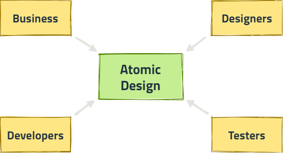
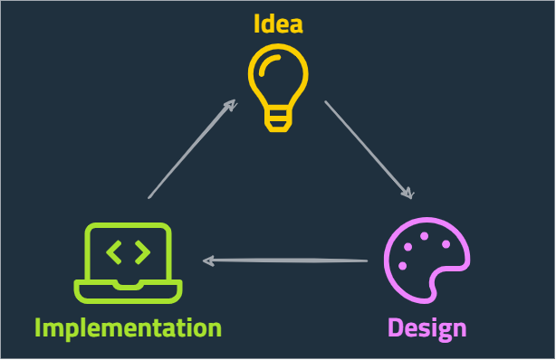
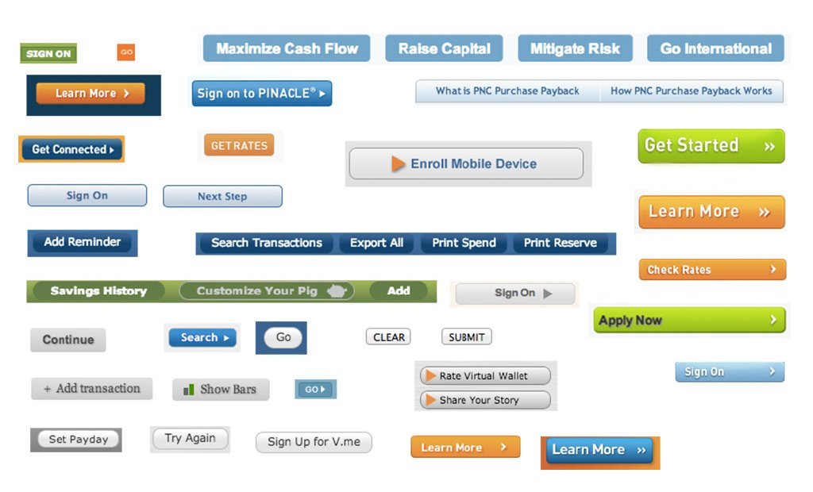
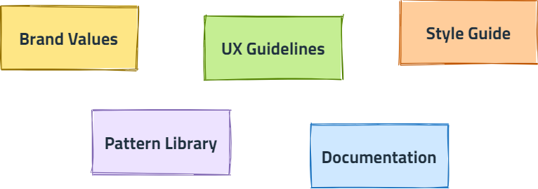
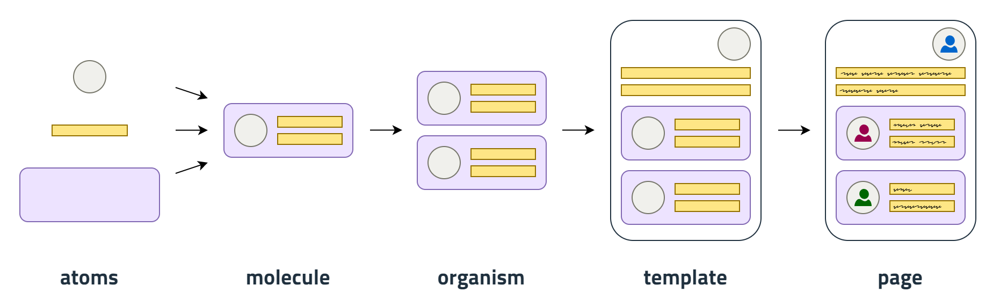
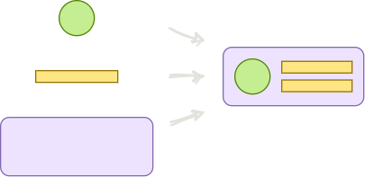
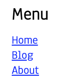
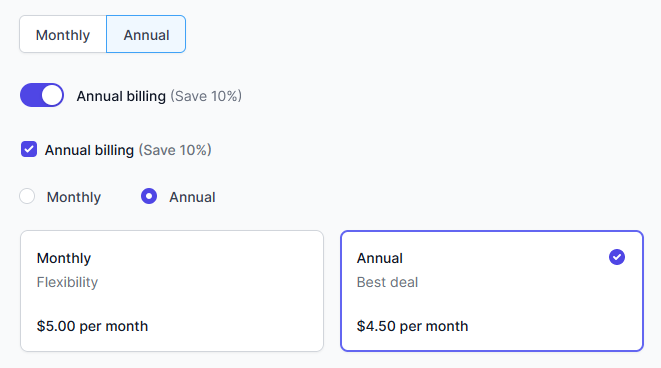
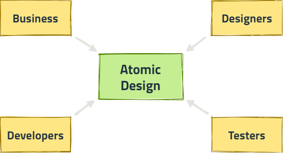

Maintain shared mindset

Dariusz Krolikowski
@darek_kay darekkay.com

A set of standards to manage design at scale by creating a shared language and visual consistency across different pages and channels


Non-linear process

<style>
.link { color: blue; }
</style>
<a class="link" href="#">Link</a><nav class="navigation">
<h2 class="headline">Menu</h2>
<a class="link" href="/">Home</a>
<a class="link" href="/blog">Blog</a>
<a class="link" href="/about">About</a>
</nav>
“We want navigation links to be red”
“We want navigation links to be red”
.link { color: blue; }/** Atomic Design violation: Molecule alters an Atom */
.navigation .link { color: red; }
/** Atomic Design violation: Molecule defines an Atom */
.navigation-link { color: red; }Atomic Design: “We don’t have red links”
.link { }
.link-primary { color: blue; }
.link-navigation { color: red; }
.link-secondary { color: red; }<nav class="navigation">
<h2 class="headline">Menu</h2>
<a class="link link-secondary" href="/">Home</a>
<a class="link link-secondary" href="/blog">Blog</a>
<a class="link link-secondary" href="/about">About</a>
</nav>Enforced reflexion
Enforced consistency


(YAGNI)
Easy to implement, hard to maintain
Standalone package
import { Button } from "carbon-components-react";
import { Button } from "@mycompany/components";
import Button from "@mycompany/button";Integrated
|-- components
|-- button
|-- button.story.js
|-- index.js
|-- application
|-- checkout.margin-2 { ... }
.font-large { ... }
.focus-ring-default { ... }:root {
--margin-2: ...;
--font-large: ...;
--focus-ring-border: ...;
}github.com / darekkay / presentations
Dariusz Krolikowski
@darek_kay darekkay.com